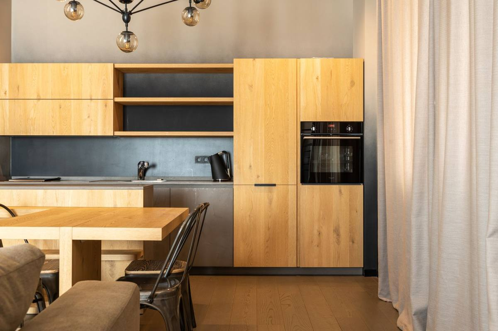
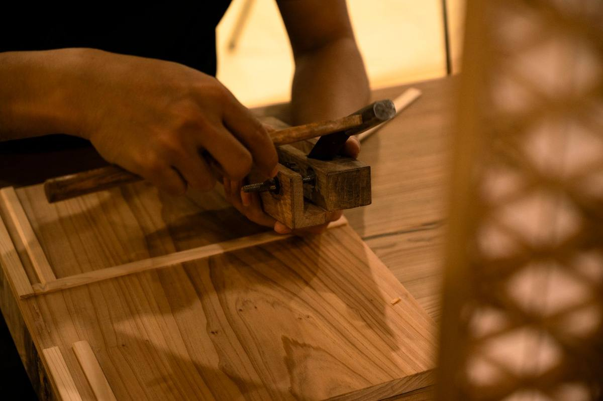

Möbel nach Mass
Schränke, Regale, Sideboards und Einbauten unter der Dachschräge. Genau auf Ihren Raum angepasst.
Schreinerei und Innenausbau in Gipf-Oberfrick
Möbel, Küchen, Türen und Innenausbau aus unserer Werkstatt an der Landstrasse. Für Private, Verwaltungen und Gewerbe im Fricktal.
Vom einzelnen Regal bis zur kompletten Küche. Alles in unserer Werkstatt gefertigt und von uns montiert.
Schränke, Regale, Sideboards und Einbauten unter der Dachschräge. Genau auf Ihren Raum angepasst.
Neue Küche oder Umbau der bestehenden. Planung, Fertigung und Montage aus einer Hand.
Wandverkleidungen, Böden, Decken und Raumtrennungen. Für Wohnungen, Büros und Läden.
Innentüren, Haustüren und Holzfenster. Neu, ersetzt oder fachgerecht instand gestellt.
Klemmende Türen, defekte Schubladen, Schäden am Parkett. Schnell und ohne Umwege.
Wir messen vor Ort, zeichnen und besprechen Material und Budget. Kostenlos und unverbindlich.


Die Huber Schreinerei Innenausbau AG arbeitet in Gipf-Oberfrick. In der eigenen Werkstatt fertigen wir Möbel, Küchen und Ausbauten nach Mass.
Wir beraten persönlich, halten Termine ein und übergeben jede Arbeit sauber. Vom ersten Gespräch bis zur Montage haben Sie denselben Ansprechpartner.
Beratungstermin vereinbarenBeratung, Planung, Fertigung und Montage durch dasselbe Team. Keine Schnittstellen, keine Ausreden.
Jedes Stück wird für Ihren Raum gebaut. Auf den Millimeter.
Wir kommen, wenn wir es sagen. Und hinterlassen die Baustelle aufgeräumt.
Kurze Wege im Fricktal, Holz aus der Region, Service auch Jahre nach der Montage.
Nichts. Wir kommen vorbei, messen aus und schicken Ihnen eine schriftliche Offerte. Unverbindlich.
Kleine Reparaturen oft innert einer Woche. Möbel und Küchen je nach Umfang vier bis acht Wochen ab Auftrag. Den genauen Termin nennen wir in der Offerte.
Ja. Wir bauen für Privatkunden, Liegenschaftsverwaltungen, Büros und Läden.
Im ganzen Fricktal, von Frick über Rheinfelden bis Laufenburg, sowie in den Regionen Aarau und Basel.
Massivholz, Furnier und hochwertige Plattenwerkstoffe. Wir beraten Sie zu Holzart, Oberfläche und Pflege.
Beschreiben Sie kurz Ihr Vorhaben. Wir melden uns innert zwei Arbeitstagen.